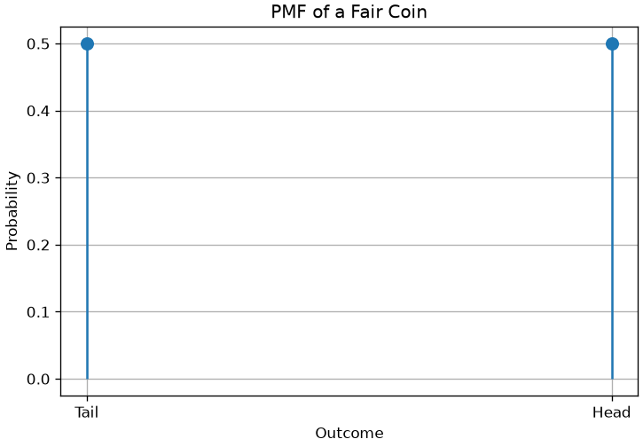
Data distributions
We have seen how it is possible to assign a probability value to a given outcome of a random variable.
In practice, it is often useful to assign probability values to all the values that the random variable can assume.
To do so, we can define a function, which we will call probability distribution which assigns a probability value to each of the possible values of a random variable.
In the case of discrete variables, we will talk about “probability mass functions”, whereas in the case of continuous variables, we will refer to “probability density functions”.
A probability distribution characterizes the random variable and defines which outcomes it is more likely to observe.
Once we find that a given random variable X is characterized by a probability distribution P(X), we can say that “X follows P” and write:
X \sim P
Discrete Variables
We will start by focusing on discrete variables.
Probability Mass Functions (PMF)
If X is discrete, P(X) is called a “probability mass function” (PMF).
P can be seen as a function mapping the values of X to real numbers indicating whether a given value is more or less likely.
A PMF on a random variable X is a function:
P:\Omega \rightarrow \lbrack 0,1\rbrack
which satisfies the following property:
\sum_{\mathbf{x}\mathbf{\in}\mathbf{\Omega}}^{}{\mathbf{P}\mathbf{(}\mathbf{x}\mathbf{)}}\mathbf{=}\mathbf{1}
where \Omega is the sample space X,
This condition implies that the probability distribution is normalized (and probability axioms are satisfied).
Example: Probability Mass Function for a Fair Coin
Let X be the random variable indicating the outcome of a coin toss.
The space of all possible outcomes (the domain of P(X)) is \{ head,\ tail\}.
The probabilities P(head) and P(tail) must be larger than or equal to zero and smaller than or equal to 1.
Also, P(head) + P(tail) = 1\ . This is obvious, as one of the two outcomes will always happen. Indeed, if we had P(tail) = 0.3, this would mean that, 30 times out of 100 times we toss a coin, the outcome will be tail. What will happen in all other cases? The outcome will be head, hence, P(head)=0.7, so P(head) + P(tail) = 1.
In the case of a fair coin, we can characterize P(X) as a “discrete uniform distribution”, i.e., a distribution which maps any value x \in X to a constant, such that the properties of the probability mass functions are satisfied.
If we have N possible outcomes, the discrete uniform probability will be P(X = x) = \frac{1}{N} , which means that all outcomes have the same probability.
This definition satisfies the constraints. Indeed:
- \frac{1}{N} \geq 0,\ \forall N
- \sum_{i}^{}{P\left( X = x_{i} \right)} = 1
A probability mass function can be visualized as a 2D diagram where the values of the function (P(x)) is plotted against the values of the independent variable x. This is the diagram associated to the PMF of the previous example, where P(head) = P(tail) = 0.5.
Example: Probability Mass Function for a Biased Coin
Now suppose we tossed our coin for 10000 times and discovered that 6000 times the outcome was “head”, whereas 4000 times it was “tail”. We deduce the coin is not fair.
Using a frequentist approach, we can manually assign values to our PMF using the general formula:
P(x) = \frac{\# trials\ in\ which\ X = x}{\#\ trials}
That is, in our case:
P(head) = \frac{6000}{10000} = 0.6;P(tail) = \frac{4000}{10000} = 0.4
We shall note that the probability we just defined satisfies all properties of probabilities, i.e.:
0 \leq P(x) \leq 1\ \forall x
\sum_{x}^{}{P(x) = 1}.
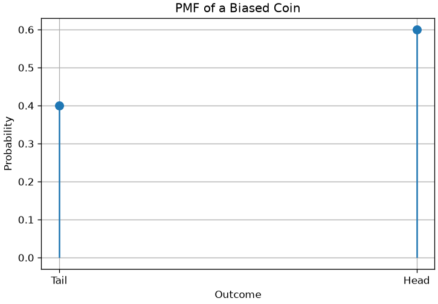
Computing Probability Mass Functions from Data
In practice, Probability Mass Functions are computed exactly as relative frequencies. Let’s see a quick example:
import pandas as pd
titanic = pd.read_csv(DATA + "titanic.csv",
index_col='PassengerId')
pclass = titanic['Pclass'].value_counts(normalize=True).sort_index()
plt.vlines(pclass.index.values, ymin=0, ymax=pclass.values, linestyles='solid')
plt.plot(pclass.index.values, pclass.values, 'o', markersize=8)
plt.xlabel('Class')
plt.ylabel('Probability')
plt.title('PMF of a Passenger Class')
plt.xticks(pclass.index.values)
plt.grid(True)
# Show the plot
plt.show()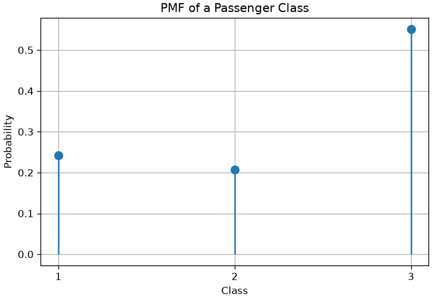
Exercise: Probability Mass Function
Let X be a random variable representing the outcome of rolling a fair dice with 6 faces:
What is the space of possible values of X?
What is its cardinality?
What is the associated probability mass function P(X)?
Suppose the dice is not fair and P(X = 1) = 0.2, whereas all other outcomes are equally probable. What is the probability mass function of P(X)?
Draw the PMF obtained for the dice.
Cumulative Distribution Functions of Discrete Variables
If the discrete variable X can be ordered (i.e., it is at least ordinal), we can define the Cumulative Distribution Function (CDF) as:
F(x) = P(X \leq x) = \sum_{y \leq x} P(y)
The CDF records the cumulative probability of all values less than or equal to a given value. For example, if H measures the height of people in centimeters, F(180) indicates the probability of selecting a person with height at most 180 cm.
Example – PMF and CDF of a fair die
For a fair die, the PMF is:
f(x) = \begin{cases} \frac{1}{6} & \text{if } x \in \{1, 2, 3, 4, 5, 6\} \\ 0 & \text{otherwise} \end{cases}
The CDF is:
F(x) = \begin{cases} 0 & \text{if } x < 1 \\ \frac{1}{6} & \text{if } 1 \leq x < 2 \\ \frac{2}{6} & \text{if } 2 \leq x < 3 \\ \frac{3}{6} & \text{if } 3 \leq x < 4 \\ \frac{4}{6} & \text{if } 4 \leq x < 5 \\ \frac{5}{6} & \text{if } 5 \leq x < 6 \\ 1 & \text{if } x \geq 6 \end{cases}
The diagram below shows an example:
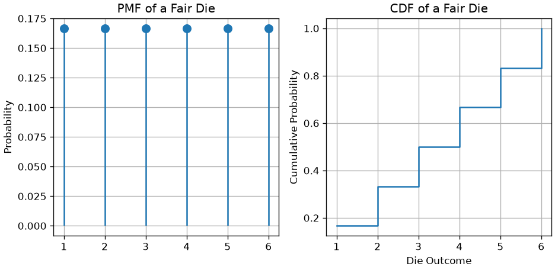
Computing CDFs for Discrete Variables from Data
Empirical Cumulative Distribution Functions (ECDFs), introduced in the lecture on data description, allow us to estimate the CDF directly from observed data. For a discrete variable, the ECDF at a value x is simply the proportion of data points less than or equal to x.
Here is a quick example:
import pandas as pd
import numpy as np
import matplotlib.pyplot as plt
# Load the Titanic dataset
titanic = pd.read_csv(DATA + "titanic.csv", index_col='PassengerId')
# Extract the age column, removing missing values
ages = titanic['Age'].dropna()
# Sort the ages
ages_sorted = np.sort(ages)
# Compute the ECDF
ecdf = np.arange(1, len(ages_sorted)+1) / len(ages_sorted)
# Plot the ECDF
plt.figure(figsize=(8, 5))
plt.plot(ages_sorted, ecdf)
plt.xlabel('Age')
plt.ylabel('ECDF')
plt.title('Empirical Cumulative Distribution Function (ECDF) of Ages - Titanic')
plt.grid(True)
plt.show()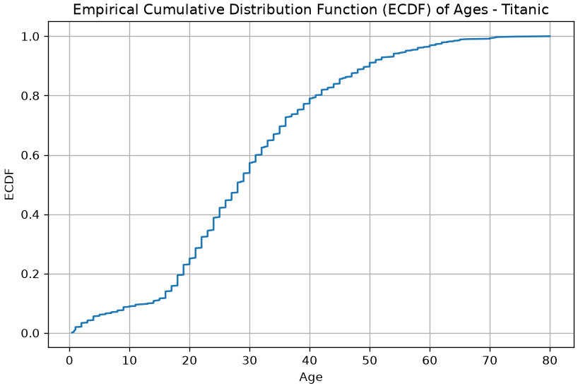
Continuous Variables
We will now focus on the case in which X is a continuous variable. In this case, we cannot use the same definitions as for discrete variables and we have to resort to new definition.
Probability Density Functions (PDF)
In order to define a probability distribution over a continuous variable, we first have to introduce the concept of “probability density function”.
A probability density function over a variable X is defined as follows:
f:\Omega \rightarrow [0,1]
and must satisfy the following property:
\int f(x)\,dx = 1
This condition is equivalent to \sum P(x) = 1 in the case of a discrete variable. The sum becomes an integral for continuous variables.
We can then define the concept of probability based on the density as follows:
P(a \leq x \leq b) = \int_{a}^b f(x)\,dx
Intuitively, the density function f(x) describes how likely it is to observe values near x. The higher the density at a point, the more likely it is to find the variable in a small interval around that point. In other words, the density can be seen as a “concentration” of probability: regions where f(x) is high correspond to intervals where the variable is more frequently observed. To obtain an actual probability, we must integrate the density over an interval.
For a continuous random variable, the probability of observing exactly x is zero: P(X = x) = 0. However, the density function f(x) at x is generally not zero; it represents the probability per unit interval around x. Probability is obtained by integrating f(x) over an interval, not at a single point.
Example: Uniform PDF
Let us consider a random number generator which outputs numbers comprised between a and b.
Let X be a random variable assuming the values generated by the random number generator.
The PDF of X will be a uniform distribution such that:
P(x) = 0\ \forall x < a\ \ or\ x > b;
P(x) = \frac{1}{b - a}\ \forall a \leq x \leq b;
We can see that this PDF satisfies all constraints:
P(x) \geq 0\ \forall x.
\int P(x)dx = 1 (prove that this is true as an exercise).
The diagram below shows an illustration of a uniform PDF with bounds a and b:
U(a,b)
Of course, continuous distributions can be (and generally are) much more complicated than that.
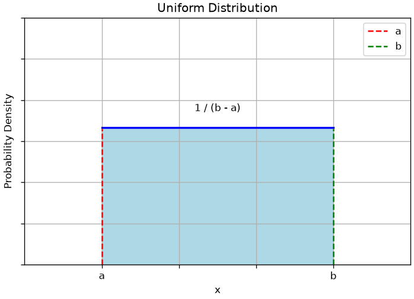
Approximating a PDF with Density Histograms and Density Estimates
When working with real data, we can try to approximate the PDF of a continuous variable with histograms.
Let the height and width of bin b_j be h_j and w_j respectively. In a normalized histogram, we define the height of bin b_j as follows:
h_j=\frac{c_j}{n}
where c_j is the number of observations that fall in bin b_j.
Note that, while normalized histograms are such that each bar height is comprised between 0 and 1, they do not satisfy the properties of PDFs.
Let the area of bin b_j be:
A_j = w_j \cdot h_j
The integral over histogram H (i.e., the area under the histogram) will be:
\int_{-\infty}^{\infty} H(x) dx = \sum_j A_j = \sum_j w_j \frac{c_j}{n} = \frac{1}{n}\sum_j w_j \cdot c_j = \sum w_j \neq 1
To ensure that this property is satisfied, we define a new kind of histogram, the density histogram, where bin heights are defined as:
h_j = \frac{c_j}{w_j \cdot n}
In this case:
\sum_j A_j = \sum_j w_j \frac{c_j}{w_j \cdot n} = \frac{1}{n}\sum_j \frac{w_j}{w_j} \cdot c_j = 1
To create a density histogram in Python, simply pass density=True to the hist function in matplotlib or pandas.
import pandas as pd
import numpy as np
import matplotlib.pyplot as plt
from scipy.stats import norm
# Load the Titanic dataset and extract the 'Age' column, dropping missing values
titanic = pd.read_csv(DATA + "titanic.csv")
ages = titanic['Age'].dropna()
# Create a figure with two subplots for side-by-side comparison
fig, (ax1, ax2) = plt.subplots(1, 2, figsize=(14, 6))
# --- Plot 1: Normalized Histogram (Probability) ---
# The sum of bar heights will equal 1
weights = np.ones_like(ages) / len(ages)
ax1.hist(ages, bins=20, weights=weights, color='skyblue', edgecolor='black')
ax1.set_title('Normalized Histogram (Probability)')
ax1.set_xlabel('Age')
ax1.set_ylabel('Probability (Sum of heights = 1)')
ax1.grid(True, alpha=0.6)
# --- Plot 2: Density Histogram ---
# The total area of the bars will equal 1
ax2.hist(ages, bins=20, density=True, color='salmon', edgecolor='black', label='Density Histogram')
# Fit a normal distribution and overlay its PDF
mu_hat, sigma_hat = norm.fit(ages)
x = np.linspace(ages.min(), ages.max(), 100)
pdf_fitted = norm.pdf(x, loc=mu_hat, scale=sigma_hat)
ax2.plot(x, pdf_fitted, 'r-', lw=2, label='Fitted Normal PDF')
ax2.set_title('Density Histogram')
ax2.set_xlabel('Age')
ax2.set_ylabel('Density (Total area = 1)')
ax2.grid(True, alpha=0.6)
ax2.legend()
# Add an overall title and show the plot
plt.suptitle('Normalized vs. Density Histograms for Passenger Ages', fontsize=16)
plt.tight_layout(rect=[0, 0.03, 1, 0.95]) # Adjust layout to make space for suptitle
plt.show()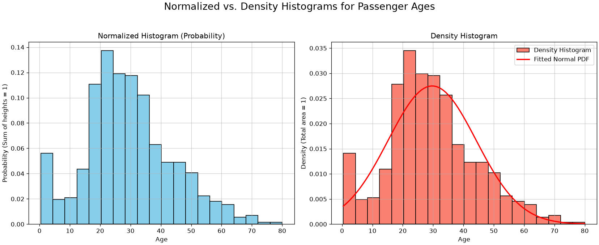
The figure above contrasts two important ways to normalize a histogram using Titanic passenger ages, each with a distinct but related interpretation:
Normalized Histogram (Left):
The y-axis represents probability. Each bar’s height shows the proportion of passengers in that age bin, so the sum of all bar heights equals 1. This treats the binned data like a discrete probability distribution and allows direct reading of probabilities (e.g., the chance of being 20–24 years old is roughly 0.12 or 12%).Density Histogram (Right):
The y-axis represents density—probability per unit on the x-axis (e.g., per year of age). Here, it’s the area of each bar (height × width) that reflects probability. The total area of all bars equals 1, mirroring the behavior of a continuous Probability Density Function (PDF).
Key takeaway:
The density histogram is the correct empirical approximation of a continuous PDF. That’s why the smooth red PDF curve aligns with the right plot’s y-axis but would be mis-scaled on the left. While both histograms are normalized, only the density version properly reflects continuous probability.
Cumulative Distribution Functions (CDF)
Just like in the case of discrete variables, we can define Cumulative Distribution Functions (CDFs) for continuous random variables using their density functions. The CDF of a random variable is generally defined as:
F(x) = \int_{-\infty}^x f(x)\,dx
Example
The CDF of the uniform distribution will be given by:
- F(x) = 0 for x < a
- F(x) = \frac{x - a}{b - a} for a \leq x \leq b
- F(x) = 1 for x > b
The plot below shows a diagram:
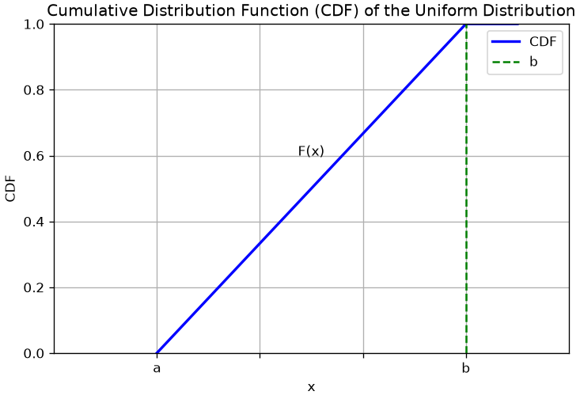
Common Probability Distributions
There are several common probability distributions which can be used to describe random events. These distributions have an analytical formulation which depends generally on one or more parameters.
When we have enough evidence that a given random variable is well described by one of these distributions, we can simply “fit” the distribution to the data (i.e., choose the correct parameters for the distribution) and use the analytical formulation to deal with the random variable.
It is hence useful to know the most common probability distributions so that we can recognize the cases in which they can be used.
Discrete Uniform Distribution
The discrete uniform distribution is controlled by a parameter k \in \mathbb{N} and assumes that all outcomes have the same probability of occurring:
P(X=a_i) = \frac{1}{k}
Where \Omega = \{a_1,\ldots,a_k\}.
Example
The outcomes of rolling a fair die follow a uniform distribution with k=6, as shown in the diagram below:
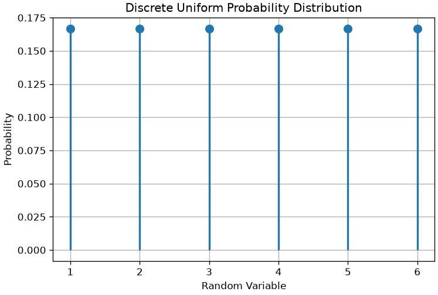
Bernoulli Distribution
The Bernoulli distribution is a distribution over a single binary random variable, i.e., the variable X can take only two values: \left\{ 0,1 \right\}.
The distribution is controlled by a single parameter \phi \in \lbrack 0,1\rbrack, which gives the probability of the variable to be equal to 1.
The analytical formulation of the Bernoulli distribution is very simple:
P(X = 1) = \phi;
P(X = 0) = 1 - \phi
Example
A skewed coin lands on “head” 60\% of the times. If we define X = 1 when the outcome is head and X = 0 when the outcome is tail, then the variable follows a Bernoulli distribution with \phi = 0.6.
The diagram below gives an example:
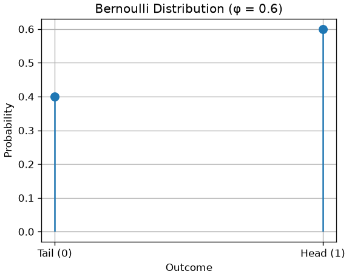
Binomial Distribution
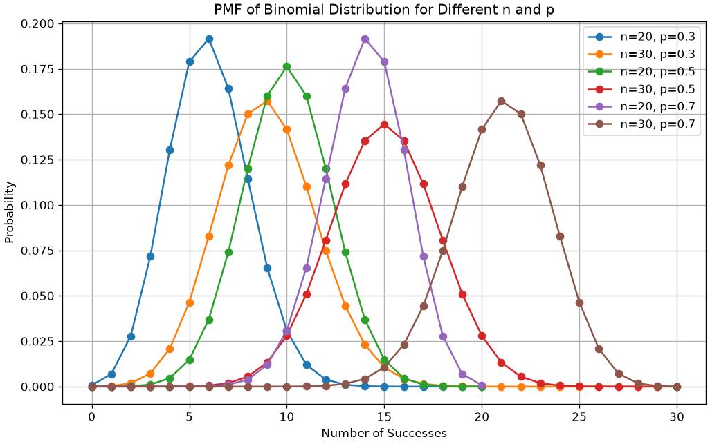
The binomial distribution is a discrete probability distribution (PMF) over natural numbers with parameters \mathbf{n} and \mathbf{p}
It models the probability of obtaining \mathbf{k} successes in a sequence of \mathbf{n} independent experiments which follow a Bernoulli distribution with parameter \mathbf{p}\mathbf{\ (}\mathbf{\phi}\mathbf{=}\mathbf{p}\mathbf{)};
The probability mass function of the distribution is given by:
P(k) = \binom{n}{k}p^{k}(1 - p)^{n - k}
Where:
k is the number of successes
n is the number of independent trials
p is the probability of a success in a single trial
Example
What is the probability of tossing a coin three times and obtaining three heads? We have:
k = 3: number of successes (three times head)
n = 3: number of trials
p = 0.5: the probability of getting a head when tossing a coin
The required probability will be given by:
P(3) = \binom{3}{3}{0.5}^{3}(1 - 0.5)^{3 - 3} = {0.5}^{3} = 0.125
Exercise
What is the probability of tossing an unfair coin (P\left( 'head^{'} \right) = 0.6) 7 times and obtaining 2 tails?
Categorical Distribution
The multinoulli or categorical distribution is a distribution of a single discrete variable with k different states, where k is finite.
The distribution is parametrized by a vector \mathbf{p} \in \lbrack 0,1\rbrack^k, where p_{i} gives the probability of the i^{th} state.
\mathbf{p} must be such that \sum_{i = 1}^kp_{i} = 1 to obtain a valid probability distribution.
The analytical form of the distribution is given by: p(x = i) = p_{i};
This distribution is the generalization of the Bernoulli distribution to the case of multiple states.
Example: Rolling a Biased Die
Consider a single roll of a biased six-sided die. The outcomes are discrete and finite: X \in \{1, 2, 3, 4, 5, 6\}.
If the die is biased such that the probabilities are:
- P(X=1) = 0.10
- P(X=2) = 0.15
- P(X=3) = 0.20
- P(X=4) = 0.20
- P(X=5) = 0.10
- P(X=6) = 0.25
Then the outcome follows a Categorical distribution with k = 6 and the specified probabilities \{p_1, p_2, \dots, p_6\} = \{0.1,0.15,0.2,0.2,0.1,0.25\}.
The figure below shows an example:
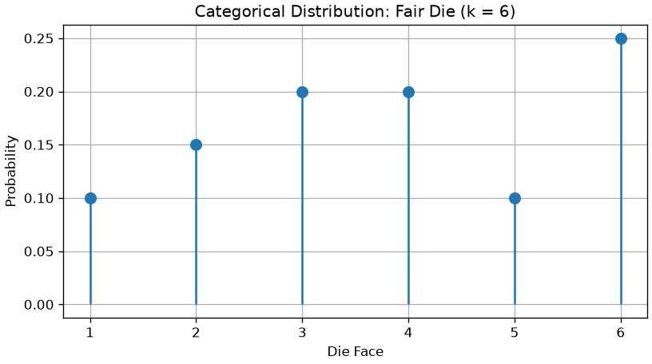
Multinomial Distribution
The multinomial distribution generalizes the binomial distribution to the case in which the experiments are not binary, but they can have multiple outcomes (e.g., a dice vs a coin).
In particular, the multinomial distribution models the probability of obtaining exactly (n_{1},\ldots,n_{k}) occurrences (with n = \sum_{i}^{}n_{i}) for each of the k possible outcomes in a sequence of n independent experiments which follow a Categorial distribution with probabilities p_{1},\ldots,p_{k}.
The parameters of the distribution are:
n: the number of trials
k: the number of possible outcomes
p_{1},\ldots,p_{k} the probabilities of obtaining a given class in each trial (with \sum_{i = 1}^{k}p_{i} = 1)
The PMF of the distribution is:
P\left( n_{1},\ldots,n_{k} \right) = \frac{n!}{n_{1}!\ldots n_{k}!}p_{1}^{n_{1}} \cdot \ldots \cdot p_{k}^{n_{k}}
Example
Given a fair die with 6 possible outcomes, what is the probability of getting 3 times 1, 2 times 2, 4 time 3, 5 times 4, 0 times 5, and 1 time 6, rolling the dice for 15 times?
We have:
n = 15
k = 6
p_{1} = p_{2} = \ldots p_{6} = \frac{1}{6}
The required probability is given by:
P(3,2,4,5,0,1) = \frac{15!}{3!2!4!5!0!1!} \cdot \frac{1}{6^{3}} \cdot \frac{1}{6^{2}} \cdot \frac{1}{6^{4}} \cdot \frac{1}{6^{5}} \cdot \frac{1}{6^{0}} \cdot \frac{1}{6^{1}} = 8.04 \cdot 10^{- 5}
The bar chart below illustrate the example, showing the observed counts and the estimated probability.
This low probability reflects the combinatorial nature of the multinomial distribution, which accounts for both the number of ways the outcomes can be arranged and the likelihood of each individual outcome.
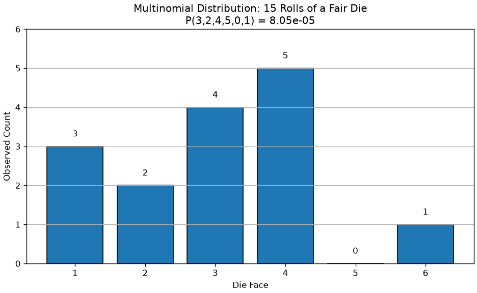
Gaussian Distribution
The Bernoulli and Categorical distributions are PMF, i.e., distributions over discrete random variables.
A common PDF when dealing with real values is the Gaussian distribution, also known as Normal Distribution.
The distribution is characterized by two parameters:
The mean \mu\mathfrak{\in R}
The standard deviation \sigma \in (0, + \infty)
In practice, the distribution is often seen in terms of \mu and \sigma^{2} rather than \sigma, where \sigma^{2} is called the variance.
The analytical formulation of the Normal distribution is as follows:
N\left( x;\mu,\sigma^{2} \right) = \sqrt{\frac{1}{2\pi\sigma^{2}}}e^{- \frac{1}{2\sigma^{2}}(x - \mu)^{2}}
The term under the square root is a normalization term which ensures that the distribution integrates to 1.
The Gaussian distribution is very used when we do not have much prior knowledge on the real distribution we wish to model. This in mainly due to the central limit theorem, which states that the sum of many independent random variables with the same distribution is approximately normally distributed.
Interpretation
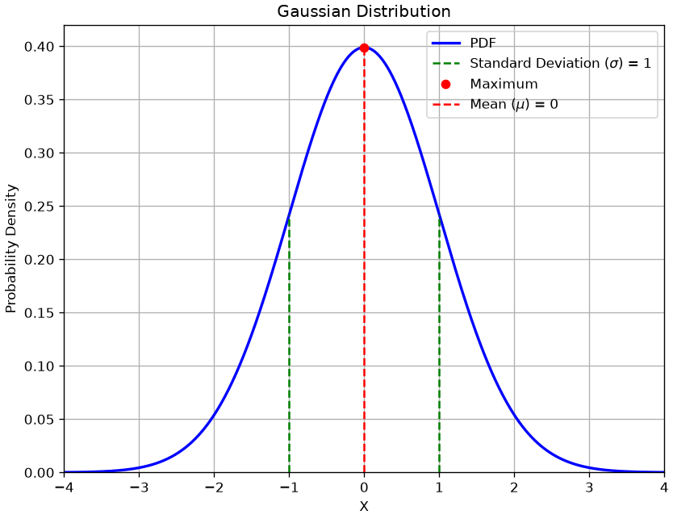
If we plot the PDF of a Normal distribution, we can find that it is easy to interpret the meaning of its parameters:
The resulting curve has a maximum (highest probability) when x = \mu
The curve is symmetric, with the inflection points at x = \mu \pm \sigma
The example shows a normal distribution for \mu = 0 and \sigma = 1
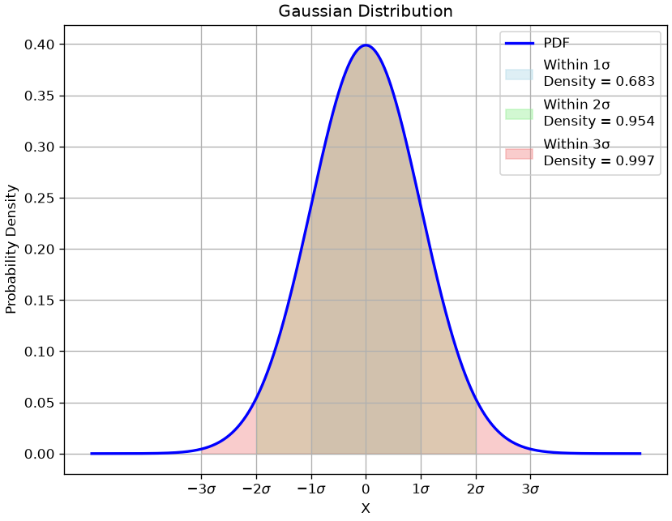
Another notable property of the Normal distribution is that:
About 68\% of the density is comprised in the interval \lbrack - \sigma,\sigma\rbrack;
About 95\% of the density is comprised in the interval \lbrack - 2\sigma,2\sigma\rbrack;
Almost 100% of the density is comprised in the interval \lbrack - 3\sigma,3\sigma\rbrack.
Central Limit Theorem
The Central Limit Theorem (CLT) is a fundamental statistical principle stating that the distribution of the sum (or average) of a large number of independent and identically distributed (i.i.d.) random variables \{X_i\}_{i=1}^n tends toward a normal (Gaussian) distribution as n \to \infty, regardless of the original distribution of each X_i.
This result is crucial because it explains why the Gaussian distribution is so commonly observed in data analysis and natural phenomena, even when the underlying data are not normally distributed.
Key points:
- The CLT applies to sums or averages of i.i.d. random variables.
- The convergence to the normal distribution becomes more accurate as the number of variables n increases.
- The original distribution of the variables can be arbitrary (e.g., uniform, binomial, etc.).
Illustration:
The plot below shows the distributions of the average outcome when rolling different numbers of dice. Each die represents an independent random variable. As the number of dice increases, the distribution of the average outcome becomes increasingly similar to a Gaussian curve.
import numpy as np
import matplotlib.pyplot as plt
import seaborn as sns # Import seaborn for KDE
# Simulate rolling a fair six-sided die
num_rolls = 1000
sample_sizes = [1, 2, 5, 10, 50, 5000]
# List to store the means of each sample
sample_means = []
for sample_size in sample_sizes:
means = [np.mean(np.random.randint(1, 7, sample_size)) for _ in range(num_rolls)]
sample_means.append(means)
# Plot the sample means for different sample sizes with KDE
plt.figure(figsize=(12, 8))
for i, sample_size in enumerate(sample_sizes):
plt.subplot(3, 2, i + 1)
sns.histplot(sample_means[i], bins=20, kde=True, color='blue', label='KDE', alpha=0.6)
plt.title(f'Sample Size {sample_size}')
plt.xlabel("Sample Mean")
plt.ylabel("Density")
plt.legend()
plt.suptitle('Distribution of Sample Means with KDE')
plt.tight_layout()
plt.show()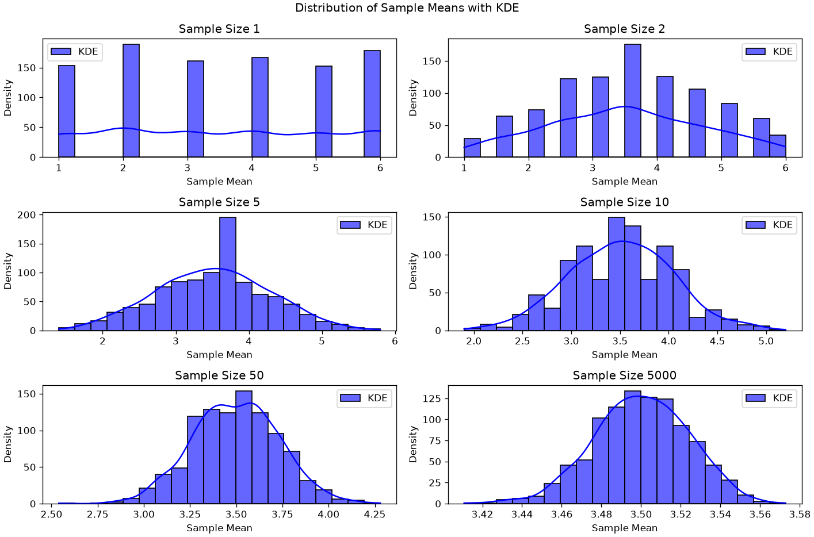
Multivariate Gaussian
The formulation of the Gaussian distribution generalizes to the multivariate case, i.e., the case in which X is d-dimensional.
In that case, the distribution is parametrized by a d-dimensional vector \mathbf{\mu} and a \mathbf{d}\mathbf{\times}\mathbf{d}\mathbf{\ }positive definite symmetric matrix \mathbf{\Sigma}. The formulation of the multi-variate Gaussian is:
N\left( \mathbf{x;\mu,}\mathbf{\Sigma} \right) = \sqrt{\frac{1}{(2\pi)^{d}\det(\Sigma)}}e^{( - \frac{1}{2}\left( \mathbf{x} - \mathbf{\mu} \right)^{T}\Sigma^{- 1}\left( \mathbf{x} - \mathbf{\mu} \right))}
In the 2D case, \mathbf{\mu} is a 2D point representing the center of the Gaussian (the position of the mode), whereas the matrix \Sigma influences the “shape” of the Gaussian.
Examples of bivariate Gaussian distributions are shown below.
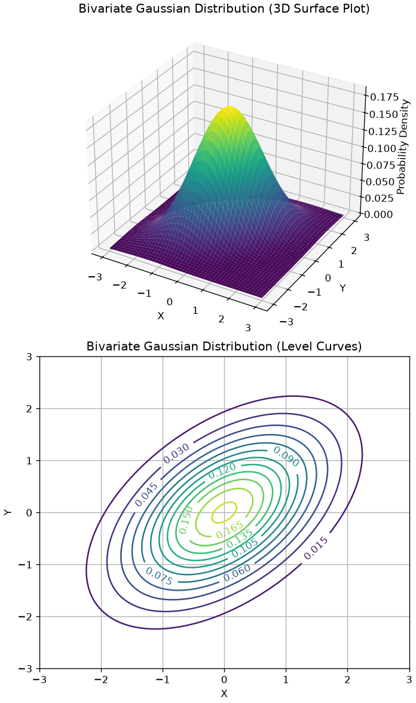
The two plots above are common representations for bivariate continuous distributions:
- The plot on the top shows a 3D representation of the PDF in which the X and Y axes are the values of the variables, while the third axis reports the probability density.
- Since it’s often hard to draw 3D graphs, we often use a contour plot to represent the 3D curves. In the 3D plot, curves of the same color represent points which have the same density in the 3D plot.
Effect of \Sigma
Similar to how variance affects the dispersion of a 1D Gaussian, the covariance matrix \Sigma affects the dispersion in both axes. As a result, changing the values of the matrix will affect the shape of the distribution. Let’s consider the general covariance matrix:
\Sigma = \begin{bmatrix} \sigma_x^2 & \sigma_{xy} \\ \sigma_{yx} & \sigma_y^2 \end{bmatrix}
The covariance matrix \Sigma determines the shape, orientation, and spread of a bivariate Gaussian distribution:
- When \Sigma is diagonal (\sigma_{xy}=\sigma_{yx}=0), the distribution is symmetric and spreads equally along both axes, resulting in circular contours.
- If the variances along the axes differ, the distribution becomes elongated along the axis with higher variance.
- Non-zero off-diagonal elements introduce correlation: a positive covariance causes the distribution to tilt so that higher values of one variable are associated with higher values of the other, while a negative covariance produces an opposite tilt.
- Larger absolute values of covariance lead to more pronounced stretching along a diagonal direction. When both variances and covariances are large, the distribution is highly dispersed and strongly correlated. These effects are clearly visible when comparing different covariance matrices in contour plots.
Some examples are shown below:
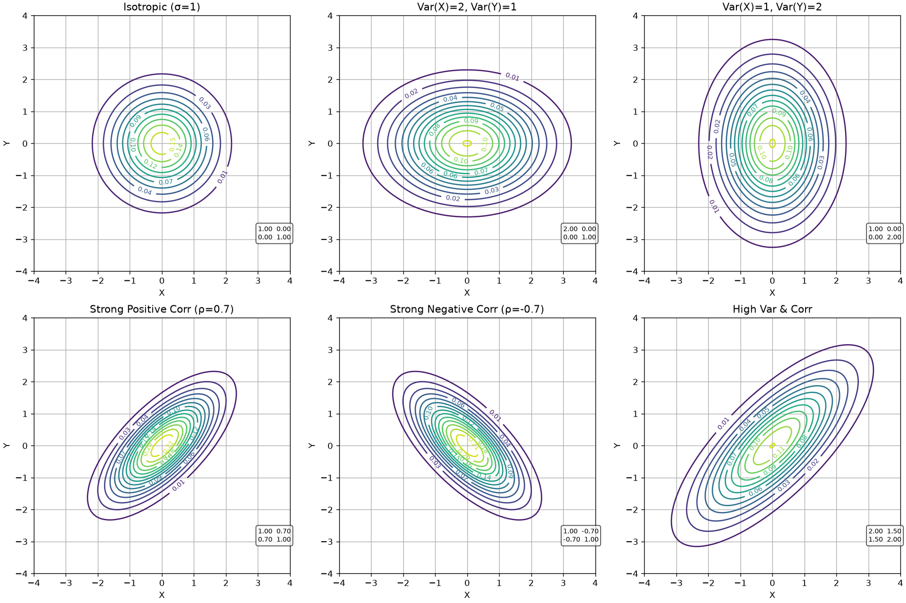
Estimation of the Parameters of a Gaussian Distribution
We have noted that in many cases we can assume a random variable follows a Gaussian distribution. However, it is not yet clear how to choose the parameters of the Gaussian distribution.
Given some data (remember, data is values assumed by random variables!), we can obtain the parameters of the Gaussian distribution related to the data with a maximum likelihood estimation.
This consists in computing the mean and variance parameters using the following formula (in the univariate case):
\mu = \frac{1}{n}\sum_{j}^{}x_{j}
\sigma^{2} = \frac{1}{n-1}\sum_{j}^{}\left( x_{j} - \mu \right)^{2}
Where x_{j} represent the different data points.
In the multi-variate case, the computation of the multi-dimensional \mathbf{\mu} vector is similar:
\mathbf{\mu} = \frac{1}{n}\sum_{j}^{}\mathbf{x}_{j}
\Sigma is instead computed as the covariance matrix related to X: \Sigma = Cov(\mathbf{X}), i.e., \Sigma_{ij} = Cov\left( \mathbf{X}_{i},\mathbf{X}_{j} \right)
The diagram below shows an example in which we fit a Gaussian to a set of data and compare it with a 2D KDE of the data.
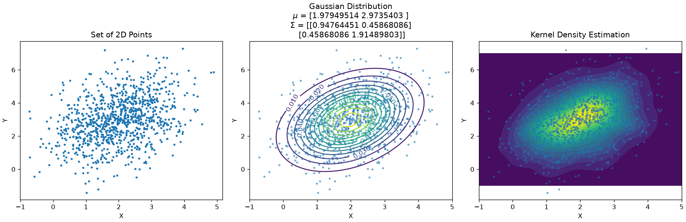
Describing Data Distributions
To effectively summarize and interpret the properties of a probability distribution, it is useful to rely on a set of descriptive statistics. Measures such as expectation (mean), variance, and covariance allow us to capture the central tendency, variability, and relationships between variables, while standardization allows us to compare variables on a common scale. These concepts provide essential tools for understanding the behavior of random variables and for analyzing data distributions in practice.
Expectation
When it is known that a random variable follows a probability distribution, it is possible to characterize that variable (and hence the related probability distribution) with some statistics.
The most straightforward of them is the expectation. The concept of expectation is very related to the concept of mean. When we compute the mean of a given set of numbers, we usually sum all the numbers together and then divide by the total.
Since a probability distribution tell us which values will be more frequent than others, we compute this mean with a weighted average, where the weights are given by the probability distribution.
Specifically, we can define the expectation of a discrete random variable X as follows:
E_{X\sim P}\lbrack X\rbrack = \sum_{x \in \Omega}^{}{xP(x)}
In the case of continuous variables, the expectation takes the form of an integral:
E_{X \sim P}\lbrack X\rbrack = \int_{x \in \Omega} xf(x)dx
The diagram below shows an example of expectation:
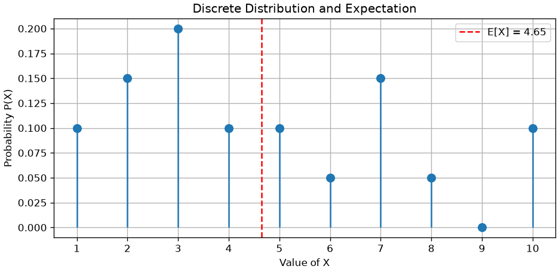
Variance and Standard Deviation
The variance gives a measure of how much variability there is in a variable X around its mean E\lbrack X\rbrack.
Similarly to the concept of variance as a descriptive measure, we can define the variance in this context as follows:
Var_{X \sim P}[X] = E_{X \sim P}[(X-E_{X \sim P}[X])^2]
As seen with data description, to make the measure of spread more interpretable, we often use the standard deviation, which is simply the square root of the variance:
Std_{X \sim P}[X]=\sqrt{Var_{X \sim P}[X]}
Standard deviation tells us, on average, how far values tend to deviate from the mean, using the same units as the original variable.
The diagram below shows an example:
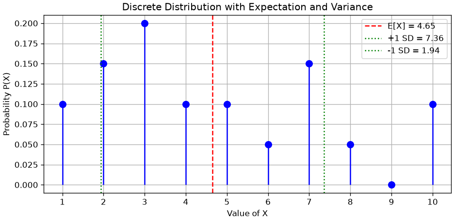
Covariance
The covariance gives a measure of how two variables are linearly related to each other. It allows to measure to what extent the increase of one of the variables corresponds to an increase of the value of the other one.
Given two random variables X \sim P_X and Y \sim P_Y, the covariance is defined as follows:
Cov_{X \sim P_X, Y \sim P_Y}(X,Y) = E_{X \sim P_X, Y \sim P_Y}\lbrack\left( X - E_{X \sim P_X}\lbrack X\rbrack \right)\left( Y - E_{Y \sim P_Y}\lbrack Y\rbrack \right)\rbrack
We can distinguish the following terms:
E\lbrack X\rbrack and E\lbrack Y\rbrack are the expectations of X and Y.
(X - E\lbrack X\rbrack) and (Y - E\lbrack Y\rbrack) are the differences between the samples and the expected values.
\left( X - E\lbrack X\rbrack \right)\left( Y - E\lbrack Y\rbrack \right) computes the product between the differences.
We have:
- If the signs of the terms agree, the product is positive.
- If the signs of the terms disagree, the product is negative.
In practice, if when X is larger than the mean, then Y is larger than the mean and vice versa, when X is lower than the mean then Y is lower than the mean, then the two variables are correlated, and the covariance is high.
If X is a multi-dimensional variable X = \lbrack X_{1},X_{2},\ldots,X_{n}\rbrack, we can compute all the possible covariances between variable pairs: Cov\lbrack X_{i},X_{j}\rbrack. This allows to create a matrix, which is generally referred to as the covariance matrix. The general term of the covariance matrix Cov(X) is given by:
Cov(X)_{i,j} = \Sigma_{ij} = Cov(X_{i},X_{j})
Entropy (Optional)
Another fundamental way to characterize a probability distribution is through entropy, which measures the average uncertainty or unpredictability associated with the possible values of a random variable.
Self-Information
To understand entropy, we first introduce the concept of self-information. The self-information of an event x with probability P(x) is defined as:
I(x) = -\log_2 P(x)
(we will use \log in the future in this context to denote \log_2 for brevity)
This definition is motivated by several properties of the logarithm:
- The logarithm makes self-information additive for independent events: the information gained from observing two independent events is the sum of their individual self-informations.
I(X = x,Y = y) = - \log\left\lbrack P(X = x,Y = y) \right\rbrack =
= \log\left\lbrack P(X = x)P(Y = y) \right\rbrack = - logP(X = x) - \log P(Y = y) = I(x) + I(y)
- The negative logarithm reflects the intuition that rare events are more informative: as P(x) decreases, I(x) increases (see plot below)
- The base 2 logarithm measures information in bits, which is standard in information theory
For example, if an event is certain (P(x)=1), I(x)=0 (no new information). If an event is very unlikely (P(x)\to 0), I(x)\to \infty (maximum surprise).
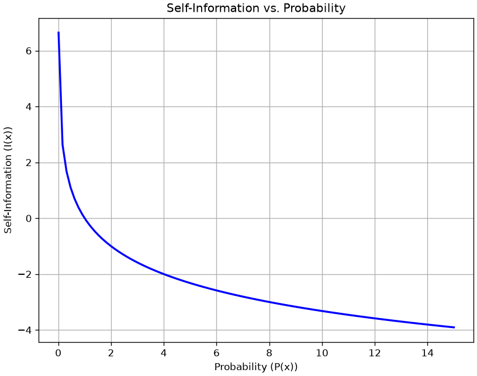
Entropy of a Distribution
The entropy of a random variable X is the average self-information over all possible values of X, weighted by their probabilities (i.e., the expected self-information):
- For discrete variables: H(X) = -\sum_{x \in \Omega} P(x) \log_2 P(x)
- For continuous variables (differential entropy): h(X) = -\int_{x \in \Omega} f(x) \log_2 f(x) dx
Entropy is highest when the distribution is uniform (maximum uncertainty) and lowest when the distribution is concentrated on a few values (minimum uncertainty).
Note: Entropy is measured in bits if the logarithm base 2 is used and nats if we use a natural logarithm (base e).
Example
- A fair coin (P(head)=0.5, P(tail)=0.5): H(X) = 1 bit.
- A highly biased coin (P(head)=0.99, P(tail)=0.01): H(X) \approx 0.08 bits.
Entropy thus provides a synthetic measure of the uncertainty of a distribution, useful for comparing different random variables and for applications in information theory and machine learning.
Entropy of a Bernoulli variable
Let’s consider a variable X following a Bernoulli distribution with probability p, i.e.:
X_p = \begin{cases} 1 & \text{with probability } p\\ 0 & \text{with probability } 1-p \end{cases}
Then the entropy of this variable will be:
H(X_p) = -p\log p -(-1-p)\log(1-p)
If we plot H(X_p) with respect to p, we obtain the following graph:
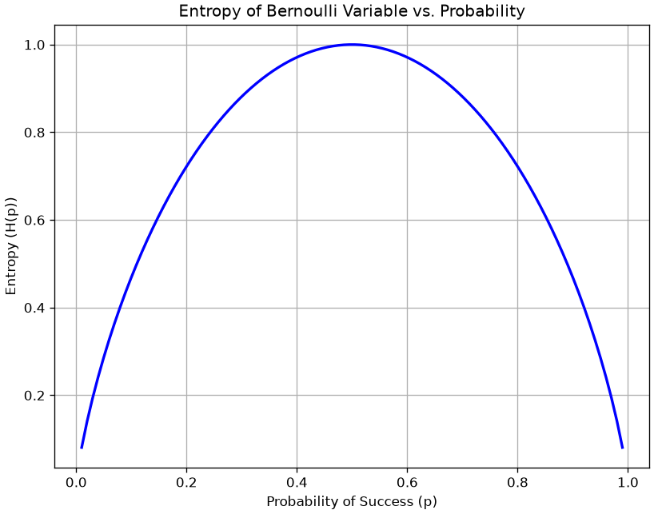
Standardization
Standardization transforms a random variable X into a variable Z so that it has:
- Expectation equal to zero: E(Z) = 0.
- Variance equal to one: Var(Z) = 1.
The standardized variable will be:
Z = \frac{X - \mu_X}{\sigma_X} = \frac{X-E[X]}{\sqrt{Var[X]}}
The plot below shows a data distribution before and after standardization.
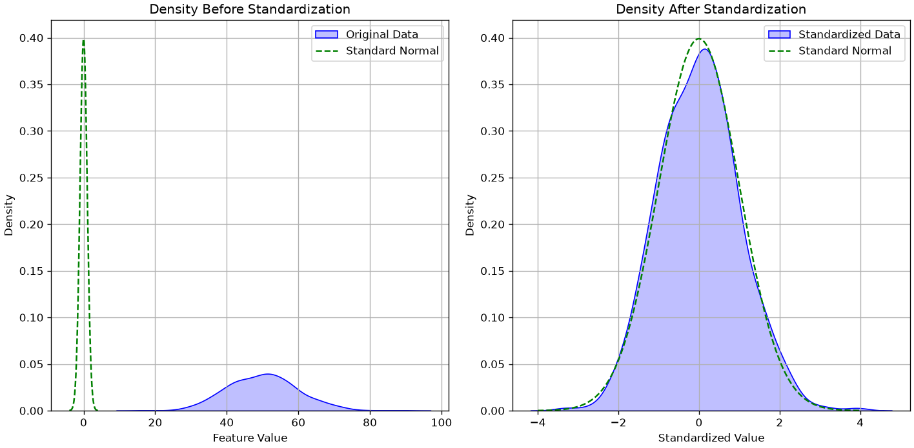
Fitting Distributions to Data
Often, we want to fit a theoretical probability distribution to observed data. This means estimating the parameters of the distribution so that it best describes the data. In Python, this can be done easily using scipy.stats.
Below is an example of fitting a normal (Gaussian) distribution to a dataset:
import pandas as pd
import numpy as np
import matplotlib.pyplot as plt
from scipy.stats import norm
# Load the Titanic dataset
titanic = pd.read_csv(DATA + "titanic.csv", index_col='PassengerId')
# Extract the Age column and drop missing values
ages = titanic['Age'].dropna()
# Fit a normal distribution to the Age data
mu_hat, sigma_hat = norm.fit(ages)
# Plot the histogram of Age
plt.hist(ages, bins=30, density=True, alpha=0.6, color='g', label='Age Data')
# Plot the fitted normal distribution
x = np.linspace(ages.min(), ages.max(), 100)
pdf_fitted = norm.pdf(x, loc=mu_hat, scale=sigma_hat)
plt.plot(x, pdf_fitted, 'r-', label=f'Fitted Normal\n$\mu$={mu_hat:.2f}, $\sigma$={sigma_hat:.2f}')
plt.xlabel('Age')
plt.ylabel('Density')
plt.title('Fit of a Normal Distribution to Titanic Age Data')
plt.legend()
plt.grid(True)
plt.show()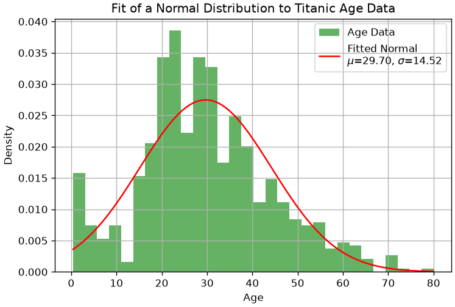
We can do the same with other distribution. For instance, with the binomial distribution:
import pandas as pd
import matplotlib.pyplot as plt
import numpy as np
from scipy.stats import binom
# Load the Titanic dataset
titanic = pd.read_csv(DATA + "titanic.csv", index_col='PassengerId')
# Encode 'Sex': female=1, male=0
sex_numeric = (titanic['Sex'] == 'female').astype(int)
# Estimate p (probability of being female)
p_hat = sex_numeric.mean()
n = len(sex_numeric)
# Binomial PMF for n trials (here, n=1 for each passenger)
x = [0, 1]
pmf = binom.pmf(x, n=1, p=p_hat)
# Plot the PMF
plt.bar(['Male', 'Female'], pmf, color=['blue', 'pink'])
plt.title(f'Binomial Distribution Fit for Sex\nEstimated p = {p_hat:.2f}')
plt.ylabel('Probability')
plt.xlabel('Sex')
plt.ylim(0, 1)
plt.grid(True, axis='y')
plt.show()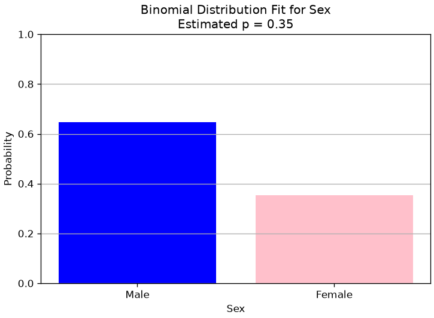
Exercises
- Recognise the shape. Plot the distribution of
Fareand ofAgein the Titanic data. Describe each in words: symmetric or skewed, unimodal or not, heavy-tailed or not. Which summary statistic would you report for each, and why? - Fit and check. Fit a normal distribution to
Ageand overlay it on the histogram. Then produce a Q-Q plot. Where does the fit fail, and does it matter for a statement about the mean age? - The log-normal. Plot
Fareon a logarithmic axis. Does the transformed variable look normal? What does it mean, in the language of the problem, if fares are log-normally distributed? - Simulate the central limit theorem. Draw 1000 samples of size n from a strongly skewed distribution (an exponential, say) for n \in \{2, 5, 30, 100\}, and plot the distribution of the sample means. At which n does it start to look normal?
- Discrete distributions.
SibSpcounts siblings and spouses aboard. Fit a Poisson distribution to it and compare the expected and observed counts. Where does the Poisson model break down, and what feature of the data explains it?
References
Parts of chapter 1 of [1];
Most of chapter 3 of [2];
Parts of chapter 8 of [3].
[1] Bishop, Christopher M. Pattern recognition and machine learning. springer, 2006. https://www.microsoft.com/en-us/research/uploads/prod/2006/01/Bishop-Pattern-Recognition-and-Machine-Learning-2006.pdf
[2] Goodfellow, Ian, Yoshua Bengio, and Aaron Courville. Deep learning. MIT press, 2016. https://www.deeplearningbook.org/
[3] Heumann, Christian, and Michael Schomaker Shalabh. Introduction to statistics and data analysis. Springer International Publishing Switzerland, 2016.